Chapter Six · Section (d): Ahadith on the foregoing subjects (concerning the excellence of Tawakkul)
Hadith 20
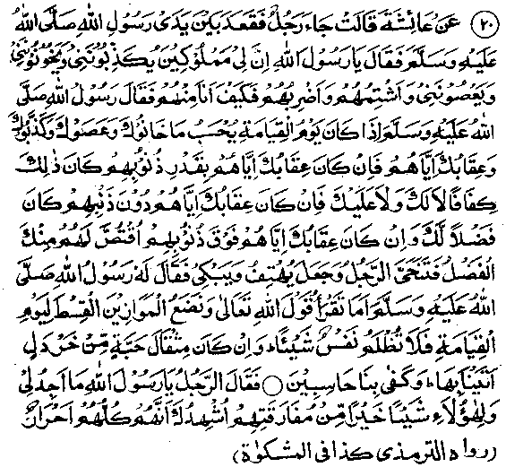
Aishah Radhiallaho anha narrates that a person once came and sat down in front of Rasulullah Sallallaho alaihe wasallam. He then said, "O Rasulullah, I have many slaves who tell lies to me, cheat me and disobey me, and I scold them and beat them. How shall I be treated with regard to them on the Day of Resurrection?" Rasulullah Sallallaho alaihe wasallam replied, "On the Day of Resurrection their offences, of disobedience, deceit and lying to you,shall be weighed in the Balance (for, on that Day, everything, whether it is something possessing a physical existence or otherwise, shall be weighed in the Balance) and the retribution determined according to their offences. If your punishment for them would equal their offence in weight, you will be on even terms; if your punishment weighed less than the offences, the difference will be added to your credit. But if your punishment of them be more than they deserved, you-shall have to pay for the excess." The man went aside, wailing and weeping with sorrow. Rasulullah Sallallaho alaihe wasallam then said, "Do you not recite this Ayat in the Holy Qur’an?".
And We shall set a just Balance for the Day of Resurrection, so that no soul is wronged in aught. Though it be of the weight of a grain of mustard seed, We shall bring it; And We suffice for reckoners. (al-Ambiya: 47)
The man said, "O Rasulullah, I can think of nothing better, both for myself and my slaves, than to separate from them; I call upon you to bear witness that they are all free".
Note:
‘Facing the Reckoning on the Day of Judgment will be a great ordeal and there are frequent references to it, in the Holy Qur’an and Ahadith, giving details of how the Reckoning will be made and forewarning men against its severity. We quote below a few Ayaat and Ahadith, by way of illustration:-
1. ‘And guard yourself against a Day in which you will be brought back to Allah. Then every soul will be paid in full that which it has earned, and they will not be wronged. ’ (al-Baqarah: 281)
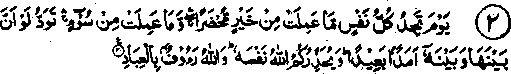
2. ‘On the Day when every soul will find itself confronted with all that it has done of good, and all that it has done of evil; (every soul) will long that there might be a mighty chasm (distance) between it (the soul) and that (evil). Allah biddeth you to beware of Him. And Allah is full of pity for (His) bondsmen' (Aal-e-Imraan: 30) '.
(Out of consideration for you, He forewarns you against His punishment, lest you should have to suffer it).
3. ‘Whoso deceiveth will bring his deceit with him on the Day of Judgement. Then every soul will be paid in full what it has earned; and they will not be wronged’. (al-e-Imraan: 161)
4. ‘Every soul will taste of death. And you will be paid, on the Day of Resurrection, only that which you have fairly earned (good or bad)’. (Aal-e-Imraan: 185)
5. ‘Lo! Allah is swift to take account.'
This Ayat is frequently repeated in the Holy Qur’an. It means that everybody will soon be taken to account and recompensed in full for his deeds.
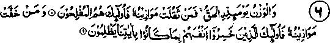
6. ‘The weighing, on that Day, (of deeds) is a reality. As for those whose scale is heavy (with good deeds), they will be successful. And as for those whose scale is light, those are they who will lose their souls because they did not pay the attention that was due to our revelations’ (al-A‘raf: 8-9)
7. 'Lo! Our messengers (angels) write down all the evils) that you plot’. (Yunus: 21)
(And then retribution will be enforced on you for all your misdeeds on the Day of Resurrection, when your book of deeds is placed before you).
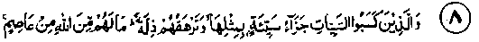
8. ‘And those who earn ill deeds, (for them) there is requital of each ill deed by the like thereof; and disgrace will overtake them. They have no protector from Allah, (their faces will be so dark) as if they had been covered with a cloak of darkest night’. (Yunus: 27)
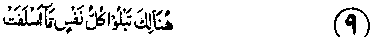
9. "There shall every soul experience (or, discern) that which it has done aforetime (in the world i.e. will know whether his deeds were good or bad), and will be taken to'account’. (Yunus: 30)
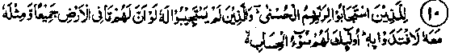
10. ‘For those who answered Allah’s call (obeyed Him) is bliss (a good recompense); and for those who did not answer His call, even if they had all that is in the earth, and therewith the like thereof, they would proffer it as ransom. Such will have a woeful Reckoning’(ar-Ra‘d:18),
11. ‘Thins (responsibility) is, (O Muhammad) but conveyance (of the message); Ours the Reckoning’ (ar-Ra'd; 40)
12. ‘Our Lord' Forgive me and my parents and believers ' (Mo’mineen) on the Day when the Reckoning is established.’.
(Ibrahim: 41)
This was the invocation to Allah Ta‘ala by Ibrahim (Alaihissalam)
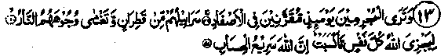
13. ‘You will see the guilty on that Day, linked together in chains, their raiments will be made from pitch (highly inflammable resin of pines) and Fire will be covering their faces, so that Allah may repay each soul what it has earned. Lo! Allah is swift at reckoning’. (Ibrahim: 49-51)
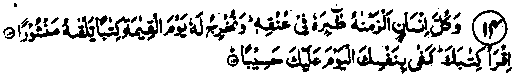
14. ‘And every man’s augury (good or bad deeds) have We fastened to his own neck, and We shall spread forth for him, on the Day. of Resurrection, the book of his deeds wide open. (And it will be said unto him): Read your book, your soul suffices as reckoner against you this day’. (Make your reckoning for yourself; you need not be reckoned by anybody else). (Bani Israel: 13-14)
15. ‘Nay (it is not as the"Kaafirs think), but We record that which anyone says (and We shall produce before him his book of deeds, on the Day of Resurrection ).’(Mariam: 79)
16. ‘Their Reckoning draweth near for mankind, while' they are heedless and turn away (from preparation for it).’ (al-Ambiya: 1)
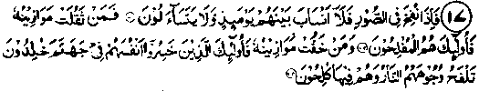
17. ‘And when the Trumpet (Soor) is blown (on the Day of Resurrection, people will be in great terror) so that there will be no kinship among them (they wilt become strangers to one another in the stupor of terror, as an Ayat says in another context: ‘On the Day when a man flees from his brother’....) nor will they ask of one another. (And the balance will be raised for them). Then those whose scales (of good deeds) are heavy, they, are the successful. And those whose scales are light, those are who will lose their souls, in hell abiding. The Fire will burn their faces, which will become distorted.’(al-Mo’minun: 101-104)
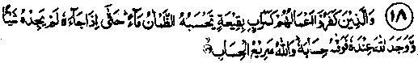
18. ‘Those who disbelieve (are away from the light of true Guidance or Noor of Hidayat), their'deeds are as a mirage in a desert: the - thirsty one supposes it to be water (from distance), till he comes unto it and finds it to be nothing and finds in place thereof,
Allah, Who pays him his account. And Allah is swift to take account.’(an-Nur: 39)
19.
‘Lo! Those who wander (astray) from the path of Allah will have an awful doom, for as much as they forgot the Day of Reckoning. ’ (Saad: 26)
20. This Day (the Day of Resurrection) shall each soul be requited that which it has earned; no wrong (will be done on) this Day, Lo! Allah is swift at reckoning.’(al-Mo’min: 17)
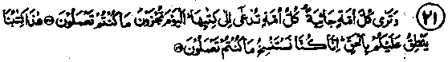
21. ‘And (on the Day of Resurrection) you will see each nation crouching (on their knees, in terror), each nation summoned to its Record (of deeds). (And it will be said unto them): This Day you will be requited what you used to do. Our Book (in which your deeds are recorded) pronounces against you with truth. Lo! We have caused (all) that you did to be recorded (by the angels and this is now before you)’(al-Jaathiah: 28-29)
22. 'When the two Recorders (the angels, who make a ready record of everything said or done, record his doings), seated on the right hand and on the left. He utters no word but there is with him an observer ready (who makes a record of what he says; this is the Record of deeds’(Qaaf: 17-18)
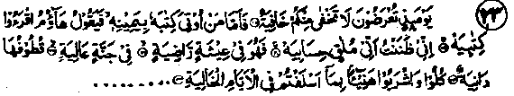
23. The Day that you are brought (before Allah for Reckoning), not a secret of yours will be hidden. (Your Record will be given in your hands.) Then, he who is given his Record in his right hand, will say (rejoicing): (See and) read my book! Surely I believed that I should have to face my Reckoning. (And I was preparing for this Day, in the world). Then, he will be in a blissful. In a high garden- (Jannah). Whereof the clusters (of fruits) hang low, are easy to reach. (And it will be said to those therein): "Eat and drink at ease (enjoy yourselves) in return for what you sent on before you in past days. But as for him who is given his Record in his left hand, he will say (in utter remorse and sorrow): Oh, would that I had not been given my book, and knew not how my account stood! Ah! would that (Death) had made an end of me! Ah, my wealth has not been of any use to me! (Ah), my power (prestige) has perished.(It will be said) Take him, fetter him and then expose him to the fire of Jahannam, and then bind him in a chain whereof the length is seventy cubits' (al-Haaqqah: 18-32)
We have already quoted a part of this Ayat in the Chapter ‘On Miserliness’, at no. 13.
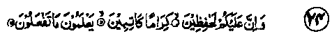
24. Verily there are above you, guardians (the angels that remember what you say or do); kind and honourable (writing down all your deeds). They know (and understand all) that you do. (And the same Record will be brought before you on the Day of Resurrection).’(al-Infitaar: 10-12)
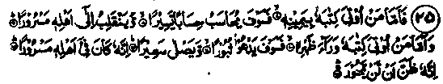
25. 'Then he who. is given his Record in his right hand, he truly will get an easy Reckoning, and will return unto his people in joy. But whoso is given his Record behind his back, he surely will invoke destruction (as men do when they are desperate, in sixer suffering) and he will be thrown into the fire of Jahannam. Truly, he lived among his people rejoicing (in the world). Truly did he think that he would not have to return (to Us), (al-Inshiqaaq:7-14)
26. 'Lo! unto Us is their return; and (when it will be) for Us to call them to accounts (al-Ghashiya: 25-26)
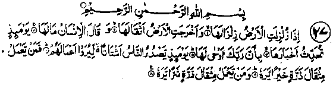
27. When the earth is shaken to her (utmost) convulsion (how tremendous will the convulsion be when the entire earth is shaken in a sudden earthquake); and the earth throws up her burdens (hidden treasures and dead bodies); and man cries out (in bewilderment), ‘what is the matter with it?'On that day shall it relate its chronicles (the accounts of good or bad deeds committed on the earth’s surface). For (on that Day), thy Lord will have given it inspiration. On that Day, will men proceed in scattered companies to be shown their deeds (there will be companies of those ‘near to Allah’, companies of the pious ones and the companies of those condemned to go to Jahannam; each company will be sub-divided into various sections; there will be groups of the riders, groups of the pedestrians and the groups of those being dragged to Jahannam, on their faces, etc). Then anyone who has done an atom’s weight of good( in the world) shall see it; and-anyone who has done an atom’s weight of evil, shall see it. ’ (al-Zilzal, 1-8)
The above mentioned twenty seven Verses, about Reckoning and the compensation of deeds, have been given here as a sample. There are hundreds of other Verses which treat this and similar subjects in different ways. Similarly, there are thousands of Ahadith, too numerous for the scope of this book, about the severity of the Day of Reckoning. It is, therefore, imperative that we should spend part of our time (being wasted in earning worldly benefits) in deeds that will be useful for us in our eternal life. It is not too late, and we can do something before the time comes when we can only feel remorse.
Some Ahadith:.
At this point, we shall recount a few Ahadith on these subjects:
Once, Aishah Radhiallaho anha thought of Jahannam and began to weep. When Rasulullah Sallallaho alaihe wasallam asked her about it, she replied, "My thought of Jahannam has moved me to tears. Will you ever think of your family members on that Day?" Rasulullah Sallallaho alaihe wasallam replied, "There are three occasions at which no one will think of others: (1) when the Balance is setup, till one knows whether the weight of one’s good deeds is light or heavy; (ii) when the Book of deeds is handed to everybody, until he knows whether his Book of deeds comes into his right hand, or the left behind his back; (iii) and when Bridge of Siraat (the Pathway) is laid across Jahannam (and he is commanded to go across it), till he goes across successfully." (Mishkaat)
Ibne Abbas Radhiallaho anho says, "Men will face a reckoning of deeds on the Day of Resurrection: he whose virtues exceed his evil deeds (even by a single act of goodness) will go to Jannah; and he whose evil deeds exceed his virtues (by a single misdeed) will go to Jahannam". He then recited the Verse, ‘As for those whose Scale is heavy’ (given at No: VI above) and added, ‘The Scale will become heavy even with the addition of an atom’s weight of virtue. He whose virtues are equal to his evil deeds, will go to the ‘A'raaf (the interspace between Jannah and Jahannam).’
Ali Radhiallaho anho says: "The scale (of virtues) of a person whose outer behaviour is better than his inner nature, will be lighter than the scale of a person whose inner self is better than his outer behaviour". Anas Radhiallaho anho narrates that Rasulullah Sallallaho alaihe wasallam said, "An angel will be deputed at the scale who, when he finds a person’s scale (of virtues) to be heavy, will announce in a voice loud enough to be heard by all the creatures, ‘So-and-so, son of so-and-so, has been blessed with eternal success, after which there is no misfortune’. And if the angel finds someone’s Scale (of virtues) to be light, he will likewise proclaim him to be a wretched person, condemned to eternal misery." There are many Ahadith which relate to weighing of deeds. One relates that, "So huge will be the Balance that each of it’s scales will be vast enough to contain the heavens and the earth and all that is there between them."
Jaabir Radhiallaho anho narrates that Rasulullah Sallallaho alaihe wasallam said, "The first thing to be put in the scale (of virtues) will be the expenditure of a man on his family." Rasulullah Sallallaho alaihe wasallam once said to Abu Zarr, "Let me tell you about two virtues which are easy to perform, but very heavy in the scale (of good deeds). They are: (i) good habits, and (ii) observing silence (i.e. not indulging in loose talk)." A Hadith says: "There are two expressions, which are very dear to Allah Ta'ala, very light on the tongue but very heavy on the scale. They are:
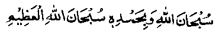
"Glory be to Allah! All praise be to Him. Glory be to Allah, Who is Incomparably Great!)"
According to another Hadith, Rasulullah Sallallaho alaihe wasallam said, "If anyone fulfils the need of one of his Muslim brothers, I shall stand by his side at the Scale (on the Day of Resurrection). If his virtues exceed his sins, well and good; if not, I shall intercede with Allah Ta'ala for him." Another Hadith says: "The ink of the Ulama and the blood of the martyrs will also be weighed on the Day of Resurrection and the ink will out-weigh the blood," Eisaa (Jesus) Alaihissalaam has said, "The virtues of the Ummah of Muhammad Sallallaho alaihe wasallam will be far heavier in the Scale than those of other people, because their tongues will be well accustomed to the recitation of the Kalimah, "Laa-ilaha-illallah." Abu Dardaa Radhiallaho anho says, "The scale (of virtues)of a person, who all the time thinks of his stomach (food and drinks)and sex, will be light” (Durre Manthur)
Another Hadith reports Rasulullah Sallallaho alaihe wasallam as saying: "The angel who records the virtues of a person on his right hand sideband is the ‘Ameer’ (commander) of the angel who records his evil deeds, and is on his left hand side. When the man performs an act of virtue, the angel on the right instantly records it with tenfold reward thereof, but when the man commits a sin, the angel on the left, being a subordinate, seeks permission of his ‘Ameer’, before recording it (in the Book). The angel on the right says to him: "Wait for six or seven hours". So, if the man repents of his sin during this time, the ‘Ameer’ does not allow the other angel to record it. But if the man does not repent the angel on the left side makes a record of it" (Durre Manthur)
A number of Ahadith relate that Rasulullah Sallallaho alaihe wasallam said, "Mankind will face reckoning three times, on the Day of Resurrection. At the first two reckonings, they will be asked to render an account of certain things, they will answer questions and offer excuses, etc., but at the third, the Book of their deeds will be given into their hands, some receiving them in their right hands and others, in their left' (Durre Manthur). It has been narrated in another Hadith that Rasulullah Sallallaho alaihe wasallam said, "Whoever possesses three qualities, Allah Ta'ala will subject him to an easy reckoning, and bless him with entry into Jannah through His mercy, (i) that you should show favour to him who is unkind to you; (ii) that you should join kinship with him who severs relations with you; and (iii) that you should forgive him who wrongs you." (Durre Manthur)
Rasulullah Sallallaho alaihe wasallam has said, "If you knew what I know of the circumstances of the Hereafter, you would laugh little (out of fear)and cry a lot, and not take delight in women in bed, but would take to the jungle crying (unto Allah)’. When Abu Zarr Radhiallaho anho heard this, he said, "I wish I were a tree to be cut down! (i.e. I wish that I were not a human being and, thus, would escape such trials). Another Hadith reports Rasulullah Sallallaho alaihe wasallam as saying, "On the Day of Resurrection, a (dead) man will rise from his grave in the same Condition in which he died." (In whatever action, good or bad, a man is engaged at the time of his death, he will be in the same state when he rises from his grave on the Day of Resurrection). (Mishkaat)- Once Rasulullah Sallallaho alaihe wasallam delivered a sermon, in the course of which he said, "Listen carefully; this world is just a temporary benefit, of which everybody, the righteous and the wicked, take their share (taking greater benefits does not indicate a man’s righteousness). The Akhirah is a definite event whose occurrence at a definite time is certain and in which a King Who is All-Powerful will pass Judgment, Infinite are His Powers. All that is good is there in Jannah, in its entirety; man should do whatever good he can, for it leads to Jannah. And evil in its entirety is in Jahannam; one should, therefore, avoid the least bit of evil, and should not take it lightly, as.it may lead one to Jahannam. Be very particular about performing good deeds, for you stand in great danger of displeasing your Lord (you should ever be mindful of incurring the displeasure of Allah Ta'ala and should have due fear of Him). Bear in mind that you will be confronted with your deeds (and you will have to account for them). He who does an atom’s weight of good will see it and he who does an atom’s weight of evil will also see it." (Mishkaat).
Ali Radhiallaho anho says: "Everyday the world is turning away, i.e. getting farther, and Akhirah is coming nearer and both of them (the world and the Akhirah) have their devotees (adherents). So, do not be a seeker of the world, rather be a seeker of the Hereafter, for the present is the time for deeds and not for rendering an account, but tomorrow is the time for rendering an account and not for deed." (Mishkaat)
Rasulullah Sallallaho alaihe wasallam has said, "There will be three courts on the Day of Judgement: In one there is no pardon at all. This court will be held for cases of associating partners to Allah Ta’ala (i.e. in this court, a verdict will be given regarding Imaan (faith) or Kufr (dis-belief) of a person; and for ‘Kufr’ there is no pardon-)-In the other court, the persons who had wronged others will have to compensate them as a matter of due right. (Either a compensation will be taken from the wrong-doer or Allah Ta'ala will grant the wronged one a recompense from His Own Treasury). There will be a third court, which will decide the cases of Allah’s rights over His creatures (i.e. what is obligatory for men to their Lord, like Faraaidh, etc.). In this court, Allah Ta'ala may be a bit lenient to the wrong doers; for this is a matter between them and their Lord; it is His discretion. If He wishes, He may demand His rights, or He may grant them a pardon.'(Mishkaat)
Another Hadith reports Rasulullah Sallallaho alaihe wasallam as saying: "He who has violated the honour, or harmed the property (of a brother Muslim) should better seek forgiveness from the aggrieved today; for a time is soon coming when he will have neither Dinaar nor Dirham(and, on that Day, all reckoning will be made in terms of virtues and sins). If a wrong-doer is found to possess some virtues, a proportionate amount of these will be taken away from him and given to the wronged person as a compensation; but if he is found to possess no virtues, a proportionate amount of the wronged person’s evil deeds will be added to the account of the wrong-doer." Thus, the wrong-doer may have to remain in Jahannam for a longer time, for. he will also have to do penance for the sins of the wronged person. (Mishkaat)
Another Hadith says: "On the Day of Resurrection, the due rights will have to be paid to those to whom they are owed. So much so that the hornless goat will be avenged from a horned goat." (Mishkaat). Rasulullah Sallallaho alaihe wasallam once said, "Do you know the truly destitute." The Sahabah Radhiallaho anhum replied, ‘To us.he is the one who has neither Dirham nor property". Rasulullah Sallallaho alaihe wasallam said, "The destitute among my Ummah is he who will come, on the Day of Resurrection, with abundant virtues like Salaat, Fasting and Zakaat, but he will have abused some one, put a false blame on another, forcibly taken the money of another person or killed or beaten another. Then,some of his good deeds will be given to the aggrieved persons. Now, if his stock of virtues is exhausted before he has settled all the claims, a proportionate amount of his ' evil deeds will be taken from him and added to his account and the man will thus be cast into Jahannam, notwithstanding his abundant virtues, to do penance for the wrongs done to others." (Mishkaat).
Faqih Abul Laith Rahmatullah alaihe says: "On the Day of Resurrection, when people rise from their graves, they will'keep standing, waiting for seventy years, but no one will pay heed to them. They will weep bitterly, till their eyes become dry and drops of blood begin to drip from their eyes. Then they will be summoned to the Doomsday audience (Hashr) and the angels will begin to descend from the heavens: angels from each heaven will stand round the plain in a separate circle, one (circle) after the other". The Holy Qur’an describes this scene of the Assembly in the following Verses:
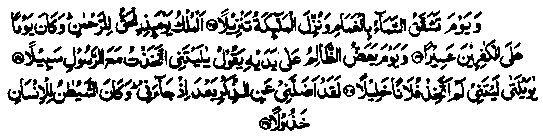
A Day when the heavens with the-clouds will be rent asunder and the angels will be sent down in a grand descent. The Sovereignty on that Day will be the true Sovereignty belonging to the Beneficent One (ar-Rahman) (i.e. nobody will have any say in the matters regarding the Reckoning, rewards or punishment of deeds). And it will be a hard Day for the Kaafirs. On the Day when the wrong-doer will gnaw his hands, he will say: "Ah, would that I had chosen a way shown by the Rasul of Allah. Alas for me! Ah, that I had never taken such a one for friend! He verily led me astray from the Reminder (from following the good counsel) after it had reached me. Truly, Shaitan was ever man’s deserter in the very hour of need.” (al-Furqaan: 25-29)
(A detailed account of how Shaitaan deserts a person at the hour of need occurs in Surrah Ibrahim.) According to another Hadith, Rasulullah Sallallaho alaihe wasallam once said, "At that time when people assemble on the Day of Resurrection, Allah Ta‘ala will address the gathering of Jinn and men, telling them of His commandments and admonitions for life in the world and the entry of their actions in the Book of deeds, and further inform them that if they find virtues recorded in their Book they should be thankful to Allah Ta'ala; and those who do not find virtues recorded in their Book should blame none but themselves (for not heeding His command.-ments)’. Allah Ta'ala will then command Jahannam so that its punishment will be made visible to the people, on seeing which everybody will fall on his knees. Allah Ta'ala says regarding this’
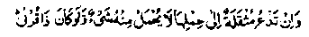
And thou will see every nation crouching, each nation, summoned to its record (of deeds) (al-Jathiya: 28)
Then Allah Ta'ala will start adjudicating between men,and even the case of the animals will be taken up. A horned goat will be required to compensate the hornless goat, whereafter the animals will be commanded to turn into dust At that time, the non-believers will crave for death, saying:
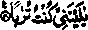
'Would that I were (also changed to) dust. ’ (an-Naba: 40)
Another Hadith reports Rasulullah Sallallaho alaihe wasallam as saying: "Mankind will be assembled on the Day of Resurrection, naked as they were at brith. Aisha Radhiallaho anha asked, ‘When people will be naked and looking at one another, would they not fed ashamed of themselves. Rasulullah Sallallaho alaihe wasallam replied, "Their suffering on that Day will be for too severe for them to think of looking at one another, their eyes will be fixed on the heavens above and everybody will perspire according to his evil deeds, the sweat reaching the feet of some, the belly of others, while still others will have their sweat covering even their mouths. The angels will stand encircling the ‘Arsh’ (Throne) of Allah Ta'ala. Then a person’s name will be called out, whereupon he will come out of the multitude and will be made to stand in front of Allah Ta'ala and a proclamation shall be made: 'Let those who have any claims upon this'man come forward.’ Then those who have claims against him, or have been wronged by him, will be called forth, one after the other, and his virtues will be given to them in compensation for what he owed them. If his good deeds are exhausted before he repays what he owes them, some of their sins will be put in his record. After he has been laden with their sins, together with his own, he will be commanded to go into ‘Haviyah’ i.e. the hungry raging fire of Jahannam (as mentioned in Surah al-QaariJah). Seeing this strictness in reckoning and the severity of punishment, every Nabi and every angel, however intimate he may be with Allah, will feel afraid on his own account, except those whom Allah Ta'ala has protected from all such fears, as a special favour. At this hour, everybody will be questioned about four things: how did he spend his life? how did he use his body? What he did regarding the knowledge that he possessed? How he acquired his property and on what he spent it?'(A detailed account of this questioning has been given under Hadith No:VI,in the same Chapter.).
Ikramah Radhiallaho anho says, "On that Day, a father will say to his son, ‘I am your father; and the son will acknowledge his favours to him, but when the father will ask him to give him one virtue, be it an atom’s weight, so that his scale (of virtues) might possibly tilt the balance, the son will reply, “I am myself in a dangerous situation. I do not know what might happen to me, so I cannot afford to part with a single act of virtue'. The man will then go to his wife, remind her of his relationship with her and of the favours he has been doing her, but she will also refuse to oblige him. In short, he will go to everyone, asking for a virtue.’ The Holy Qur’an describes this scene in the following verse:
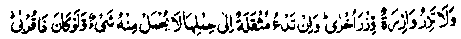
And no burdened soul can bear another's burden (of sins) and, if one heavily laden cries (for help) with his load (of sins), nothing of it will be lifted even though he (unto whom he cries) be of kin (i.e. he will not help his relatives). (Tanbeeh-ul-Ghafileen)
The version of 'Durre Manthur’ describes the same spectacle more explicitly: A father will say to his son, "How did I treat you in the world?" And the son will praise his kind behaviour towards him. The father will then ask him for one act of virtue and say, "I hope that it might be of help to me." The son will say to him, "Dear father, you have asked for a trifle, but I am helpless, for I am in an equally dangerous situation’ The man will then go to his wife and ask her for help,but she will similarly refuse to oblige him, as mentioned in the Verses
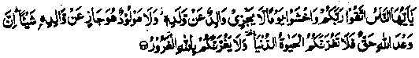
O mankind! Keep your duty to your Lord and fear a Day when the parent will not be able to avail the child in aught, nor the child to avail the parent. Lo! Allah's promise is the very truth. (The Day is bound to come). Let not the life of the world beguile you (lest you should be too engrossed in the life of the world to keep the Hereafter in mind), nor let the deceiver (Shaitan) beguile you, with regard to Allah (let not the Shaitan lead you astray and make you forgetful of that Day). (Luqman: 33)
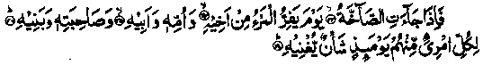
But when the (deafening) Shout comes (i.e. the Day of Resurrection), On the Day when a man flees from his brother and his mother and his father and his wife and his children. (No one shall be able to help anybody else). Every man that Day shall have concern enough to make him heedless (of others). (‘Abasa: 33-37)
Qataadah Rahmatullah alaihe commenting on these Verses says, "On the Day of Resurrection, nobody would like to come across any one of his kin or any person acquainted with him, for fear, lest he should demand something from him’ (Durre Manthur). This subject forms the content of many Verses of the Holy Qur’an. It occurs so, in Surah al-Baqarah:
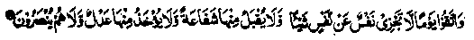
"And guard yourselves against the Day whin no sold will in aught avail another (for example, the Salaat performed by one man will not be accepted on behalf of another person), nor will intercession be accepted from it, nor will compensation (in terms Of money) be received from it, nor will they be helped. (It will not be possible for anyone to avert their punishment by use of force), "(al-Baqarah: 48)
In this Verse, Allah Ta‘ala, after recounting the various ways in which people help one another, has warned us that, in no way will anybody be able to help anyone else. There are four ways of helping a person:
1. A powerful person may intervene and thus, avert the punishment by use of force; this may be termed as 'Nusrat’. Allah Ta'ala has ruled out any such possibility.
2. A man may avert the punishment of another person, even without the use of force, in two ways:
(a) Without paying any compensation i.e. through intercession;
(b) By paying compensation, which, again, can be of two kinds viz. (i) physical compensation, or (ii) material compensation.
The Verse rejects all these possible ways of helping one another. Similarly, the same subject has been treated in many other Verses of the Holy Qur’an with slight variations.
In this connection, it should be borne in mind that the sinners, among the Muslims, would not be treated at par with the nonbelievers. The Ulama are agreed that the non-believers cannot escape their punishment even though a Nabi, saint or angel (however close he may be to Allah Ta'ala) should intercede for them. As for the case of sinners among the Muslims, the above mentioned Verses and Ahadith indicate that, after a specific time on the Day of Reckoning, the pious men, Ambiya and others, will be allowed to intercede for them. Many Verses of the Holy Qur’an testify to the truth of this statement For example, it occurs so in Surah Taa Haa: 109):
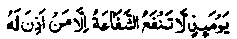
"On that Day no intercession shall mail, save (that of) him unto whom (i.e. a Nabi or a saint) the Beneficent has given leave (in favour of a person) for whom He is pleased to accept (intercession)".
But it is worthy of note that nobody knows for certain whether or not Allah Ta'ala will allow His pious men to intercede for him on the Day of Resurrection. One should, of course, entertain good expectations of the Bounty of Allah Ta'ala, but no one can be sure of being forgiven through the intercession of the pious beings. We should, therefore, be fearful of the Day of Resurrection, which is the severest Day; and try to protect ourselves against its severities, which can only be done now, in the present time. Giving Sadaqah, plentifully, is very beneficial for protection against the severity of that Day. We have quoted a large number of Verses and Ahadith, on this subject, in Chapter One of this book. There is a well-known Hadith which reports Rasulullah Sallallaho alaihe wasallam as saying, "Guard yourselves against the Fire of Jahannam, even though it be with half a date (given as Sadaqah)" and again, "Sadaqah finishes sins, as water extinguishes fire;” so also, "On the Day of Resurrection a person shall be in the shade of his Sadaqah.” (Ithaaf)
The Hadith means that, on that Day, when the intensity of heat will cause a person to sweat profusely, the perspiration reaching even up to their mouths, people will be in the shade of their Sadaqah, the coolness of the shade being in accordance with the extent of his Sadaqah; the greater the amount of Sadaqah, the cooler and the more pleasant will be the shade. Rasulullah Sallallaho alaihe wasallam has also said, "Sadaqah appeases the wrath of Allah Ta'ala and also averts a bad end" (Mishkaat) Layman advised his son, "Whenever you happen to commit a sin, give something away as Sadaqah". We have already narrated the story of an unchaste woman who was granted forgiveness for giving some water to a thirsty dog (Chapter 1 - Hadith: 10)
Ubaid bin Umair Rahmatullah alaihe says: "On the Day of Resurrection, mankind will be assembled in utter hunger, parched with thirst and stark naked. Then Allah Ta'ala will feed one Who has fed someone for the pleasure of Allah Ta'ala-, and give a drink to him who has given a drink to someone for pleasure of Allah Ta'ala; and clothe one who has clothed someone, for the pleasure of Allah Ta'ala." (Ihyaa). We have already quoted a Tradition in Chapter one, under Hadith Eleven, to the following effect, "On the Day of Resurrection, the dwellers of Jahannam will be drawn up in a row line and when one of the pious and perfect Muslims passes by them, one of the Jahannamis will ask the pious man to intercede for him with Allah Ta’ala. The man will ask him who he island he will reply, ‘Do you not recognise me? I am one who gave you a drink on such and such day." Another Hadith mentions that "On the Day of Resurrection when the Jannatis (dwellers of Jannah) and the Jahannamis (the dwellers of Jahannam) will be drawn up in two separate rows(line, a man among the Jahannamis will happen to see a person standing in the rows of the Jannatis and remind him of a favour he had done him in the world. The Jannati will catch him by the hand and take him to the presence of Allah Ta’ala, and say, ‘O Allah, this man did me such and such favour in the world,’ and Allah Ta’ala will grant him forgiveness, in His Infinite Mercy."
Another Hadith indicates thus: "On the Day of Resurrection, an announcement will be made: "Where are the poor among the Ummah of Muhammad? Rise, go about in the Assembly (Maidan-e-Hashr) and look for those who have given you a morsel of food or some drink or a piece of new or worn-out cloth for my pleasure. Hold all such people by the hand and bring them into Jannah’: At this, the poor ones among this Ummah will rise, go about the plain, search out all such people and bring them into Jannah". Another Hadith has it to the following effect: On the Day of Resurrection,' someone will make an announcement."Where are those who honoured the poor and the humble ones? Let them go to Jannah this Day, without fear or grieving any more." We have mentioned another Tradition under Hadith Thirteen in the same Chapter which is as follows: "If anyone removes a brother Muslim’s hardship, Allah Ta’ala will remove, from him, one of his hardship on the Day of Resurrection; and if anybody covers up a brother Muslim’s shortcoming, Allah Ta’ala will cover up his shortcomings, on the Day of Resurrection.’ And, under Hadith Fourteen, we have quoted the following Tradition: "He who helps one who is in distress will be firm and steadfast on a Day when even the mountains will be shaken to their very foundation". We also quoted the following Verse at No. Thirty four in Chapter One:
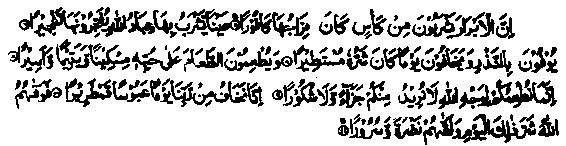
"And (they ) feed the- needy one, the orphan and the prisoner (among the Kaafirs), for the love of Him (Allah Ta'ala), (saying), "We feed you for the sake of (Allah only. We wish for no reward, nor thanks from you. Lo! We fear from our Lord a Day of frowning and of wrath. Therefore, Allah has warded off from them the evil of that Day and has made them find brightness (of face) and joy. " (ad-Dahr, 8, 9,10,11)
To conclude, we have discussed the subject in detail in Chapter One (Volume one) of this book, viz. that Sadaqah, when it is given in large quantities and frequently, proves to be very beneficial for protection against the severities of the Day of Resurrection. In this Verse, Allah Ta'ala has promised protection to those who give away Sadaqah for the love of Him. What can be more reassuring than a promise from Allah Ta'ala?